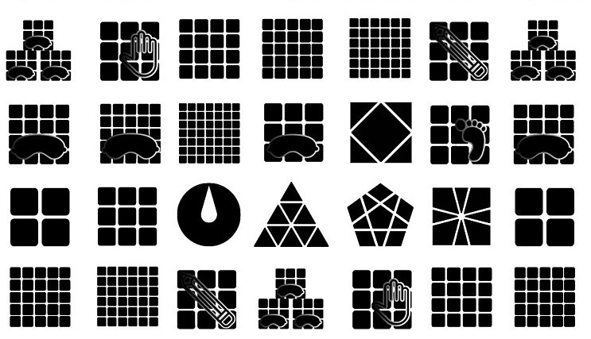
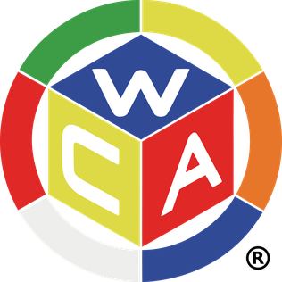
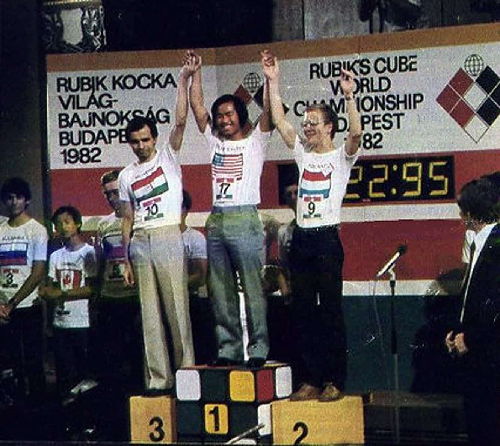

¿Qué es la WCA?
La World Cube Association (WCA) es la organización oficial que regula y promueve las competiciones de cubo de Rubik y otros "twisty puzzles" (rompecabezas de giro)
a nivel mundial. La WCA fue fundada en 2004 por Ron van Bruchem, de los Países Bajos, y Tyson Mao, de Estados Unidos, con el objetivo de establecer reglas y
estandarizar las competiciones de resolución de cubos.
La WCA tiene como misión hacer que los torneos de resolución de cubos sean justos, accesibles y organizados de manera consistente
en todo el mundo. Para ello, la organización establece una serie de reglas y regulaciones oficiales que todos los competidores
deben seguir. La WCA busca promover el cubo de Rubik y otros rompecabezas como una actividad competitiva y saludable, impulsando la colaboración y la comunidad entre los speedcubers.
Actualmente, la WCA regula más de 17 eventos oficiales, que incluyen el 3x3x3 (cubo clásico), variaciones como el 2x2x2, 4x4x4, hasta modalidades como resolver el cubo con los ojos vendados y pyraminx.

Competencias Oficiales
Las competencias oficiales de speedcubing organizadas por la World Cube Association (WCA) se enfocan en resolver el cubo de Rubik y otros rompecabezas
similares en el menor tiempo posible. Estas competencias son eventos formales, realizados bajo reglas y regulaciones específicas para asegurar la equidad y precisión
en los resultados.
En las mismas, hay distintos tipos de modalidades de resolución, se encuentra el BO3 (Best of 3 o mejor de 3) donde se realizan 3 resoluciones y se toma la del mejor
resultado.
Luego se encuentra el más utilizado, que es el Avg5 (Average of 5 o Media de 5). La mayoría de los eventos de speedcubing se basan en cinco intentos. Se descartan
el tiempo más alto y el más bajo, y se calcula un promedio de los tres tiempos restantes. Este promedio es el que se usa para clasificar a los competidores.
Una competencia siempre va por los mismos pasos teniendo el rol de competidor, estos son:
- Scramble: Los cubos son mezclados de acuerdo con un patrón de movimientos aleatorio generado y aprobado por la WCA. Los competidores no conocen el patrón antes de la competencia.
- Inspección: Antes de empezar a resolver, el competidor tiene 15 segundos de inspección para visualizar la configuración del cubo y planificar su estrategia.
- Resolución y Cronometrado: El competidor comienza cuando activa el cronómetro mediante un Stackmat Timer (sensor de manos), y lo detiene al finalizar.
- Penalizaciones: Hay penalizaciones de tiempo si el cubo no se resuelve completamente o si se cometen errores. Un cubo que no está completamente resuelto, pero presenta un error de una o dos vueltas en una pieza, recibe una penalización de +2 segundos; si el error es mayor, el intento es invalidado.
Cómo participar en competencias oficiales
Para participar en una competencia oficial de la WCA, hay que seguir algunos pasos básicos para registrarse y poder asistir, a continuación, una guía de pasos previos:
- Registrarse en el sitio web de la WCA
- Visita el sitio web oficial de la WCA y crea una cuenta. Esto te permitirá ver y registrarte en las competencias de tu región.
- Si es tu primera competencia, se te asignará un WCA ID una vez que participes. Este identificador te acompañará en todos tus eventos oficiales y es único para cada competidor.
- Buscar una Competencia Oficial Cercana
- En el sitio web de la WCA, puedes consultar el calendario de competencias para encontrar un evento cercano a tu ubicación. La WCA organiza torneos en muchos países, por lo que es probable que encuentres alguno en tu área.
- Al seleccionar una competencia, verás detalles como la fecha, el lugar, los eventos que se disputarán, el costo de inscripción y cualquier requisito adicional.
- Las competencias suelen tener una tarifa de inscripción para cubrir los gastos de organización. Las tarifas y las políticas de reembolso pueden variar.
- Registrarse en la Competencia
- Completa tu inscripción en el sitio web de la WCA y selecciona los eventos en los que deseas participar (como 3x3x3, 2x2x2, 4x4x4, etc.).
- Realiza el pago si es necesario. Algunas competencias aceptan pagos en línea, mientras que otras pueden requerir el pago en el lugar.
- Familiarizarte con las Reglas de la WCA
- Antes de la competencia, es importante leer y entender las reglas oficiales de la WCA para cada evento. Las reglas detallan todo, desde cómo iniciar y detener el cronómetro hasta cómo posicionar el cubo, las penalizaciones y la correcta manipulación del equipo.
- La mayoría de los eventos requieren la utilización de un Stackmat Timer, así que es útil practicar con este equipo para familiarizarte.
- Asistir el Día de la Competencia
- Llega temprano al lugar de la competencia. La mayoría de los eventos tienen un programa con horarios específicos para cada ronda, y se espera que los competidores lleguen puntualmente.
- Lleva tus propios rompecabezas. Aunque no hay restricciones específicas de marca, los cubos deben estar en buen estado y cumplir con las regulaciones de la WCA (por ejemplo, sin modificaciones que den ventaja).
- Escucha atentamente las indicaciones de los delegados y organizadores. Ellos te guiarán sobre cómo proceder en cada ronda y resolverán cualquier duda que tengas.


Imagen de la primera competencia oficial organizada por la World Cube Association